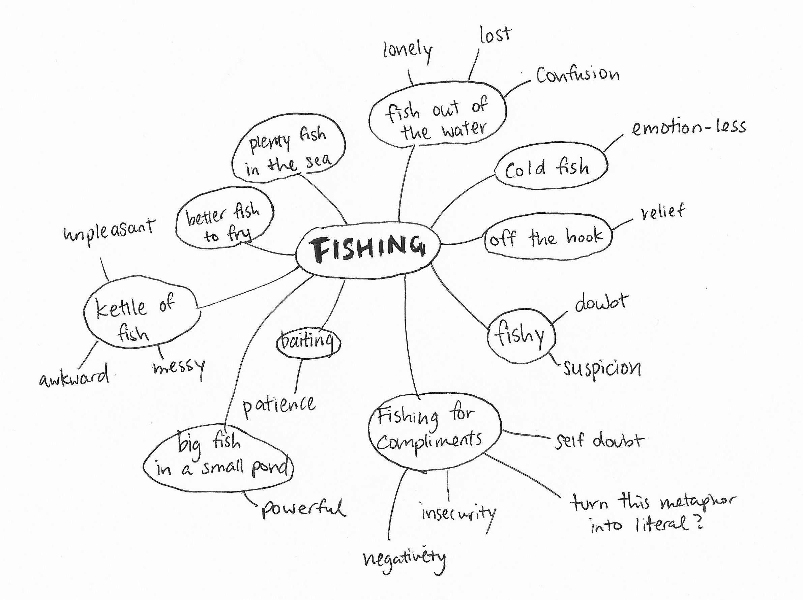
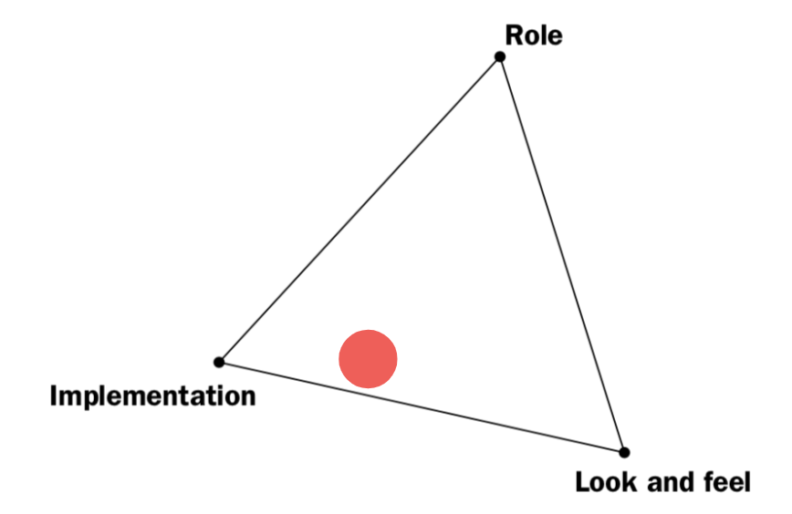
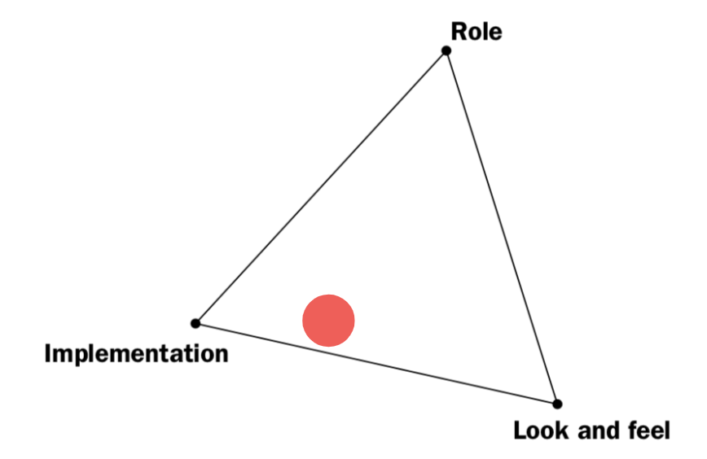

Reflection
- How do we invite people to interact with our prototype?
- What should we attach on the fishing thread, that would bring a feeling of enlightenment to people, when they pull it out of the water?
- How do we attract people who pays no attention to the fountain?
- How do we make our prototype more noticeable, but still approachable?
- How do we incorporate the historical significance of the fountain?
- Why fishing, is it a metaphor?
More Brainstorm: Metaphor, Symbolism, Idioms
Iteration & Implementation
 

Observations
Curious, playful and explorative
• Adults find it playful and some are curious about what is inside the fountain
• Kids are generally more explorative and curious about how to operate the fishing rod
Draws attention to the fountain
• A lot more people were looking into the fountain
Noticeable
• Higher resolution & fidelity
• Way more attention and smiles from adults!
Approachable
• Most adults still won’t touch the fishing rod
• Set up was very formal, the stand was made out of mailing tube and masking tape: looks fragile! And it
did broke.
• Not very kid-friendly
• Cannot assume people would know how to interact with it without instruction
• The sign wasn't clear
Sustaining the Interaction
• Kids spend a lot more time interacting with the fishing rod
• Adults spend more time observing
Feedbacks
- Make it into an installation: make the fishing rod reel itself?
- Make it as an activity: more sets of fishing rods?
- One of possible reasons that may cause the lack of interaction from adults is that there is nothing inside the fountain/water. Put something under the water attached to the fishing line and encourge people to pull it out from the water.
- Be careful what is floating or what is inside the water, think about the form.
Improvement
Some quick testing of an idea to improve our protoype to improve interaction from adults.